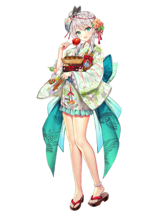

運営さんが考えてる原価
| アイテム名 | 原価(元宝) |
|---|
| 強化石 | 3 |
| 強化結晶 | 100 |
| 覚醒丹 | 100 |
| 高級育成丹 | 20 |
| 仙女育成丹 | 60 |
| 宝石券 | 20 |
| 訓練書3 | 120 |
| 訓練書4 | 300 |
| 高級ガチャ券 | |
| 通常ガチャ券 | |
| 紅翡翠 | |
訓練書3と訓練書4はギフトから計算
銅の鍵がショップで40個で800元宝で売っていた。つまり、1個あたり20元宝。
1円が0.5元宝相当
雅人深致が(150+30*20)=750元宝相当 -> 750*2 = 1500円
槿花一夕が(3200+15000+60*100) = 24200元宝相当 -> 24200*2 = 48400円
雲合霧集よりLucyStar券300元宝相当
神将交換訓練書4120ポイント
訓練書350
高級育成丹5個40ポイント
強化石20個30ポイント
神将交換
| アイテム名 | 個数 | ポイント | 取引レート |
|---|
| 強化石 | 20 | 30 | 1ポイント=2元宝 |
| 覚醒丹 | 1 | 40 | 1ポイント=2.5元宝 |
| 高級育成丹 | 5 | 40 | 1ポイント=2.5元宝 |
| 訓練書3 | 1 | 50 | 1ポイント=1元宝 |
| 訓練書4 | 1 | 120 | 1ポイント=1元宝 |
同盟ショップ
| アイテム名 | 個数 | 名声 | 取引レート |
|---|
| 強化石 | 1 | 10 | 1名声=0.3元宝 |
| 訓練書1 | 1 | 60 | 1名声=元宝 |
| 高級育成丹 | 1 | 40 | 1名声=1元宝 |
| 銅の鍵 | 1 | 50 | 1名声=0.4元宝 |
| 銀の鍵 | 1 | 100 | 1名声=0.4元宝 |
| 金の鍵 | 1 | 200 | 1名声=0.4元宝 |
だから覚醒丹、高級育成丹にすべきというわけではない。
「この中からどのアイテムを選ぶか」ではなく「数ある入手先の中からどの入手先を使うか」
みたいなのを探したいだけ。
もし武勲が効率的だとしても、UR閃結晶が必須なら、UR閃結晶以外は諦めるしかないわけで...
そもそもそのアイテムが不要なら無理にゲットする必要はない。
説明に結果を先に使うのは不本意だが、セクシーの調教が一番上でも誰も入らないのと同じ感覚。(別にこれが正解と言っているわけではない)